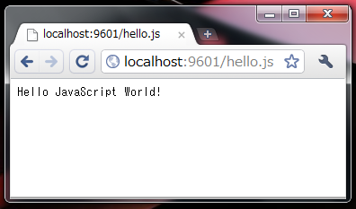

Tutorial
1. Download "qrone-x.y.z.jar"
Download latest "qrone.jar" from github.
If you have not installed Java 6, install it too.
2. Start it.
If you are using Windows, just double click "qrone-x.y.z.jar" to run it.
You see following window, it's runninng. Simply close the window to stop server.

Command-line execution is also available with options for production usage.
This is just good for testing.
3. Put your file.
QrONE server treat current directory as a document root by default.
Create file "hello.js" to same directory as "qrone-x.y.z.jar", with just following contents.
document.write("Hello JavaScript World!");
4. Done.
Simply access http://localhost:9601/test.js to show the result.
